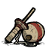 Ball and Cup
The Ball and Cup is a 'trinket', which means its only use, besides trading to the Pig King, is decorative.
It has a 4.17% chance of being found when digging up a grave. It can be traded to the Pig King for 4 Gold Nuggets, but it cannot be used in any crafting recipes.
  |  | ×4 |
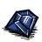 Blue Gem
The Blue Gem can also be gained as a drop from Ice Hounds. Therefore, it has 'cold' tendencies. It is described as 'glistening with cold energy'. Digging up a grave is one way of obtaining a Blue Gem before the first winter above ground, the other being a Set Piece called the Ice Staff Trap.
The Blue Gem has a 15.38% chance of being found when digging up a grave and it cannot be traded to the Pig King.
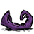 Dessicated Tentacle
The Dessicated Tentacle is a 'trinket', which means its only use, besides trading to the Pig King, is decorative. It is not the same variety of Tentacle as the in-game mob, which are found in Swamps.
It has a 4.17% chance of being found when digging up a grave. It can be traded to the Pig King for 8 Gold Nuggets, but it cannot be used in any crafting recipes. Only the Hardened Rubber Bung can equal the amount of Nuggets given by the Pig King.
 | | ×8 |
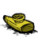 Fake Kazoo
The Fake Kazoo is a 'trinket', which means its only use, besides trading to the Pig King, is decorative. Unlike the Pan Flute, the Fake Kazoo cannot be played.
It has a 4.17% chance of being found when digging up a grave. It can be traded to the Pig King for 6 Gold Nuggets, but it cannot be used in any crafting recipes.
 | | ×6 |
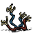 Frazzled Wires
Frazzled Wires are a 'trinket', which means its only use, besides trading to the Pig King, is decorative. The Frazzled Wires cannot conduct Lightning, or connect to the Lightning Rod.
They have a 4.17% chance of being found when digging up a grave. They can also result from hammering Broken Clockworks. They can be traded to the Pig King for 5 Gold Nuggets, but they cannot be used in any crafting recipes.
| 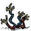 | | ×5 |
 Gears
Gears
Gears are a mechanical item used in various items that would ordinarily require electricity or batteries. They can be eaten by WX-78, which boosts its max stats. Its use in the crafting of the Ice Box means it is often ranked amongst the most important items in the early game.They can also used on Broken Clockworks for a chance of spawning friendly damaged Chess Monsters.
They have a 3.07% chance of being found when digging up a grave and they cannot be traded to the Pig King.
 Gord's Knot
Gord's Knot
The Gord's Knot is a 'trinket', which means its only use, besides trading to the Pig King, is decorative. Gord's Knot is a reference to the story in which Alexander the Great was told that whoever could complete the impossible challenge of disentangling Gordian's Knot and release the tethered cart would rule all of Asia. He released the cart by cutting the Knot with a knife, and went on to conquer much of Asia Minor, before his army rebelled. It has since become a metaphor for solving a complex problem with a simple solution, by thinking outside of the box.
It has a 4.17% chance of being found when digging up a grave. It can be traded to the Pig King for 4 Gold Nuggets, but it cannot be used in any crafting recipes.
 | | ×4 |
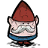 Gnome
The Gnome is a 'trinket', which means its only use, besides trading to the Pig King, is decorative. The Gnome is often noted as the most popular decorative item by the community. It can be found outside of Graves in the Box Thing set piece. It also has a 1% chance to drop from a Splumonkey Pod. Gnomes are a popular garden decoration. Contrary to a popular rumour, placing a Gnome by a Pond, will not result in it pulling out a Fishing Rod and casting it out.
It has a 4.17% chance of being found when digging up a grave. It can be traded to the Pig King for 5 Gold Nuggets, but it cannot be used in any crafting recipes.
 | | ×5 |
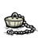 Hardened Rubber Bung
The Hardened Rubber Bung is a 'trinket', which means its only use, besides trading to the Pig King, is decorative. It is more commonly referred to as a Bath Plug.
It has a 4.17% chance of being found when digging up a grave. It can be traded to the Pig King for 8 Gold Nuggets, but it cannot be used in any crafting recipes. Only a Dessicated Tentacle can match the 8 Gold Nuggets given by the Pig King in return for the Hardened Rubber Bung.
 | | ×8 |
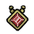 Life Giving Amulet
The Life Giving Amulet is an item worn in the players 'body' slot. It has the ability to resurrect the player upon death, and also slowly converts the players Hunger to Health (e.g. it regenerates the players health while draining hunger), hence the name, Life Giving Amulet.
It has a 3.07% chance of being found when digging up a grave. It cannot be traded to the Pig King or used in any crafting recipes.
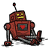 Lying Robot
The Lying Robot is a 'trinket', which means its only use, besides trading to the Pig King, is decorative. It is similar to a Robot toy. WX-78 claims the Lying Robot's name is 'HAL', and is his friend, the name 'HAL' is a reference to 2001: A Space Odyssey, in which a murderous supercomputer named HAL 9000 is found. The 'Lying' part of the robot's name probably refers to the story Liar!, by Isaac Asimov.
It has a 4.17% chance of being found when digging up a grave. It can be traded to the Pig King for 5 Gold Nuggets, but it cannot be used in any crafting recipes.
 | | ×5 |
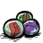 Melty Marbles
The Melty Marbles are a 'trinket', which means their only use, besides trading to the Pig King, is decorative. Marbles are a children's toy, but like all trinkets, the marbles are useless because they have melted together, as stated by the characters.
They have a 4.17% chance of being found when digging up a grave. They also can sometimes be produced when hammering Broken Clockworks. They can be traded to the Pig King for 4 Gold Nuggets, but they cannot be used in any crafting recipes.
 | | ×4 |
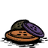 Mismatched Buttons
The Mismatched Buttons are a 'trinket', which means their only use, besides trading to the Pig King, is decorative. It may be a nod to the fact that buttons are well known for being found lying around for no reason, particularly in piggy banks. This may be why they are worth such a high amount.
They have a 4.17% chance of being found when digging up a grave. They can be traded to the Pig King for 7 Gold Nuggets, but they cannot be used in any crafting recipes.
 | | ×7 |
 Nightmare Fuel
Nightmare Fuel
Nightmare Fuel is an item that is usually only obtainable while insane, unless found in Graves. Nightmare Fuel is used in most Magic recipes. It is one of the few items that moves while dropped on the floor. It is also translucent, and is one of the few items that looks completely different when on the floor than it does in the player's inventory.
It has a 3.07% chance of being found when digging up a grave and it cannot be traded to the Pig King.
Red Gem
The Red Gem can also be gained as a drop from Fire Hounds. Therefore, it has 'heat' tendencies. Digging up a grave is the only way of obtaining a Red Gem before the first wave of Hounds containing a Fire Hound, without cheats or bugs.
It has a 15.38% chance of being found when digging up a grave and it cannot be traded to the Pig King.
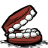 Second-Hand Dentures
The Second-hand Dentures are 'trinkets', which means their only use, besides trading to the Pig King, is decorative. This may indicate the grave that was just dug up belonged to an elderly person.
They have a 4.17% chance of being found when digging up a grave. They can be traded to the Pig King for 2 Gold Nuggets, but they cannot be used in any crafting recipes. This is the worst item for trading to the Pig King, by two clear Gold Nuggets.
 | | |
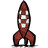 Tiny Rocketship
The Tiny Rocketship is a 'trinket', which means its only use, besides trading to the Pig King, is decorative. Despite the examine line from Wilson "Sadly, it's too small for me to escape on...", the Tiny Rocketship cannot fly. Besides the Gnome, the Tiny Rocketship is the most popular decorative Gravedigger item. It appears to be a reference to the comic book Destination Moon (Tintin), as it looks exactly like the rocket in the comic, only smaller.
It has a 4.17% chance of being found when digging up a grave. It can be traded to the Pig King for 4 Gold Nuggets, but it cannot be used in any crafting recipes.
 | | ×4 |
")
")


{kind=link}
{kind=link}
{kind=link}
{kind=link}
{kind=link}
{kind=link}
{kind=link}
{kind=link}
{kind=link}
{kind=link}
{kind=link}
{kind=link}